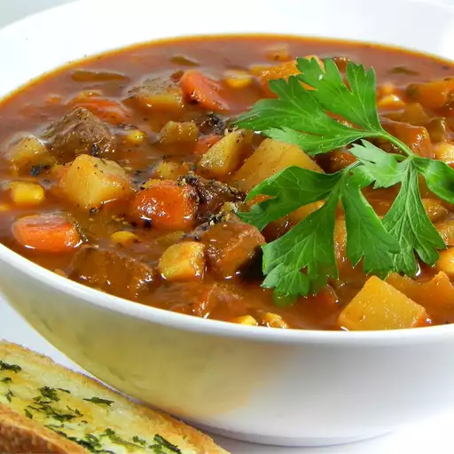

This steak soup is an extremely hearty soup that only gets better in the fridge. It is one of the only soups you will not have to jazz up on your own, and people will remember it for it! This is a great cold-weather soup, but my family requests it all year.
Melt butter and oil in a large skillet over medium heat until the foam disappears from butter. Cook and stir beef and onion in butter-oil mixture until browned, about 10 minutes.
While beef is cooking, mix together flour, paprika, salt, and pepper in a small bowl. Sprinkle flour mixture over browned beef; Stir to coat and set aside.
Pour beef broth and water into a large soup pot. Stir in parsley, celery leaves, bay leaf, and marjoram. Stir in beef mixture; Bring to a boil. Reduce heat to medium-low, cover the pot, and simmer, stirring occasionally, until meat is tender, about 45 minutes.
Mix in corn, potatoes, carrots, celery, and tomato paste. Bring to a simmer and cook uncovered, strring occasionally, until vegetables are tender and soup is thick, 15 to 20 minutes. Remove bay leaf and serve hot.